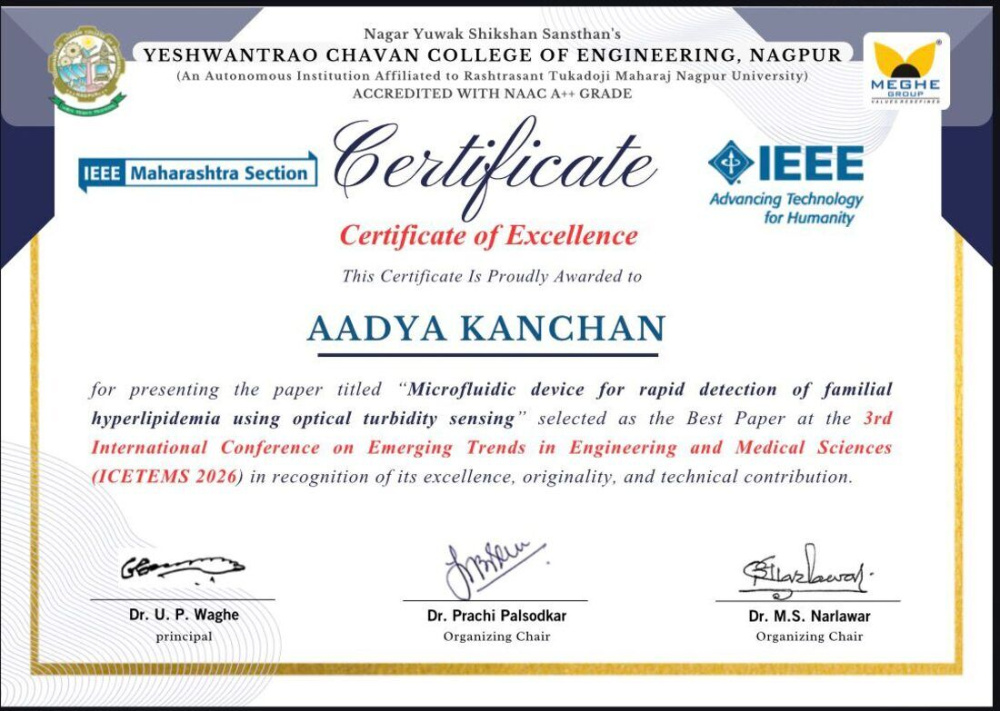

Aadya Kanchan / Maker Portfolio
Arogya Dx
A patent-published, portable microfluidic point-of-care device for rapid, affordable, reagent-free lipid screening in rural and resource-limited settings.
Technical Systems Overview
A simple, cost-effective point-of-care screening tool that captures plasma spectral signatures from 410–940 nm across UV, visible, and near-infrared regions. By leveraging lipid-induced changes in optical scattering, where different concentrations produce distinct spectral signatures, the platform enables real-time, reagent free detection and offers a scalable solution for accessible lipid screening in underserved communities.
- Reagent-free plasma turbidity analysis
- 5–10 minute screening workflow
- Multispectral sensing across 410–940 nm
- Designed for decentralized preventive healthcare
- Mass lipid screening for rural preventive healthcare
Current solutions
Current lipid profiling methods rely on expensive reagents, laboratory infrastructure, trained personnel, and require 12–24 hours for results, making them inaccessible for routine and large-scale screening, especially in rural and resource-limited settings. Consequently, testing is often delayed until symptoms appear, by which time disease progression is advanced, leaving over 50% of high-risk individuals undiagnosed.
Journey
1. Where the journey began — IISc
Summer Research Internship at IISc — Indian Institute of Science, Bengaluru, Department of Mechanical Engineering. Selected as 1 of 15 students nationally for a research internship at IISc, working in Dr. Saptarshi Basu’s laboratory on fluid mechanics and microfluidics. I attended advanced research sessions led by IISc faculty and PhD scholars, and explored laboratories working at the frontiers of engineering and science.
Undertook a team research project, presented under the mentorship of a doctoral researcher. Pushed blood through a 1000 µm-wide microchannel at 3, 13, and 23 µL/s, splitting the half-channel field of view into three zones: near wall, centre, and far wall. Using manual tracking in ImageJ, followed RBCs across 13 timed frames per zone and calculated displacement, velocity, and trajectory. Velocity rose from the wall toward the centre, and the central zones converged into a plug-like profile, while near-wall cells tumbled erratically under high shear. RBCs migrated to the core under inertial lift and wall interactions, leaving a cell-free plasma layer at the edges, the Fåhræus–Lindqvist effect in action.
That first exposure to manipulating fluids at the microscale sparked a larger question: could microfluidics be used to make preventive diagnostics faster, simpler and more accessible? That question eventually became Arogya Dx.


2. Building Arogya Dx
A PDMS microfluidic platform was used. A PEG–water solution with egg yolk as a lipid analog was prepared in concentrations of 1:9, 2:8, 3:7, 4:6, and 5:5. Samples were centrifuged prior to testing. Optical data was collected using a TCS34725 RGB sensor and an AS7265 TRIAD spectral sensor (410–940 nm, 18 channels). The setup was enclosed in a light-isolated chamber to minimize interference.


Working videos
3. Plasma Validation
Presented Arogya Dx to the Director of Internal Medicine at Trilife Hospital, explaining the technology, experimental methodology and its potential application in preventive cardiovascular screening. This enabled access to plasma samples for preliminary testing and validation of the concept.
Two plasma samples with distinct lipid profiles were tested under identical conditions. Their spectral signatures were mapped and compared to evaluate real-world applicability.
- The strongest discrimination between lipid concentrations appeared at 645 nm (red), 535 nm (green), 410 nm (blue), and in the NIR range.
- At around 410 nm, blue reflectance dropped as lipid concentration rose, consistent with optical scattering.
- Each concentration produced a distinct spectral signature, separable without relying on visible colour and confirmed by clear separation in the NIR range.
- Plasma samples followed the same patterns, confirming the system works on real-world samples.


IEEE ICETEMS 2026 — best paper award
Presented at the 3rd International Conference on Emerging Trends in Engineering and Medical Sciences as “Microfluidic Device for Rapid Detection of Familial Hyperlipidemia Using Optical Turbidity Sensing”.

Presentation.


Certificate.
Videos & resources
Research paper
“Microfluidic Device for Rapid Detection of Familial Hyperlipidemia Using Optical Turbidity Sensing”
Published in IEEE Xplore (Scopus indexed).